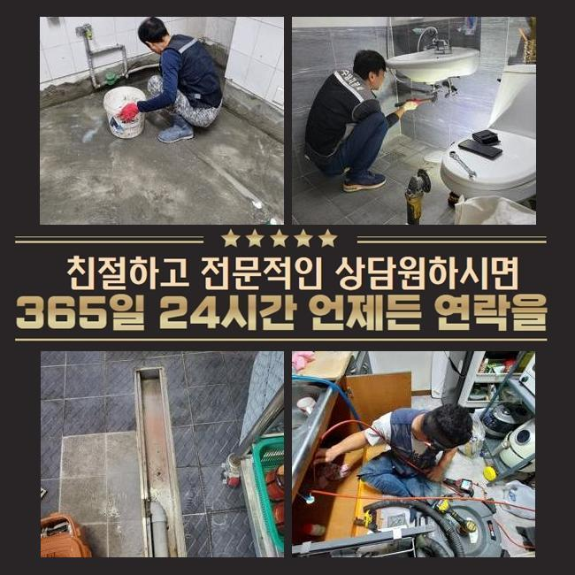
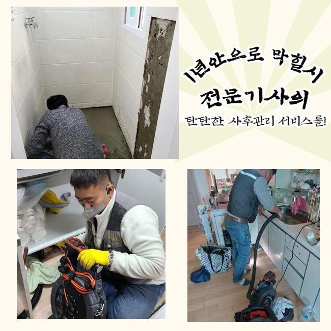
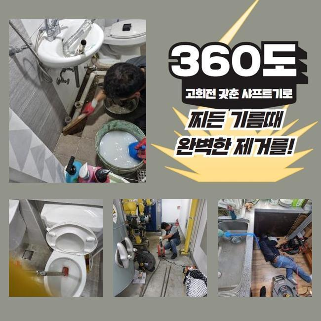
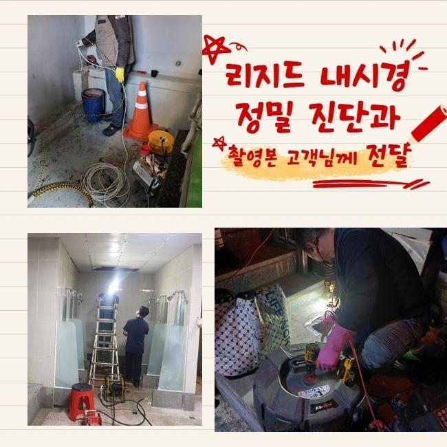
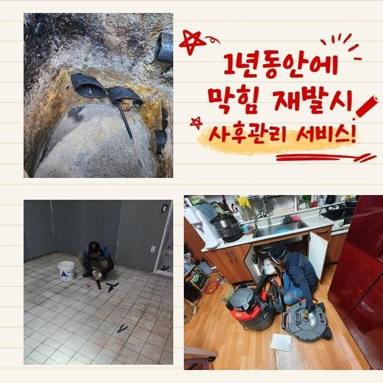
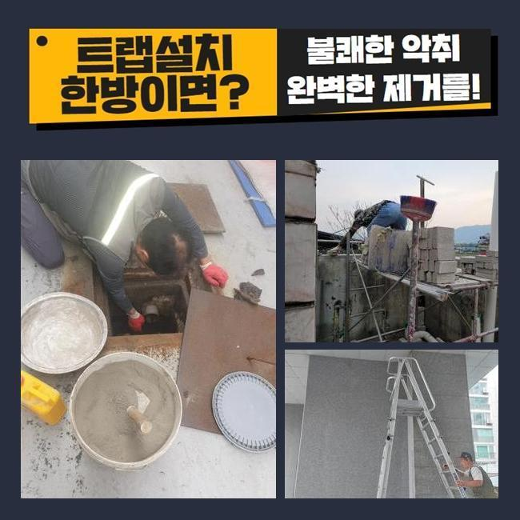

🏠 옹진군 주방하수도막힘 부평 아파트씽크대하수구막힘
용인 싱크대막힘 전문 시공 후기

📋 작업 개요
- 위치: 용인
- 서비스 유형: 싱크대막힘, 하수구막힘, 배관막힘, 맨홀막힘, 집수정막힘, 누수수리, 뚫는업체, 배관청소, 고압세척, 설비공사, 악취차단
- 작업 일시: 2024. 12. 17. 23:40
- 업체명: 하수구수사대 (010-5615-2118)
🔍 문제 상황
옹진군 주방하수도막힘 부평 아파트씽크대하수구막힘
최근의 현장은 빗물 배관 흐름이 차단되어 옥상 정원으로 물이 넘치는 문제가 나타났던 현장인데요
이 장소 이외 여러 장소에서 요청을 하셨고 처리해 드렸지만 최근의 현장은 다양한 방문자들이 사용하는 도서관이며 난이도가 높은 건물이었기에 이처럼 글을 작성 하고 있습니다
일반적으로 우수 배관이 막히는 경우에는 구식의 건축물에서 관리가 미흡하여 배수시설에 다양한 이물들이 혼입된 상황이 대부분입니다
그러나 이번 장애 현장은 완공된 지 오래된 상태가 아니며 관리 감독도 꼼꼼하게 지켜오던 곳입니다
4층 공간이 조경된 상태로 구성되어 있었고 옥상공간은 전부 대리석을 사용하여 공사를 진행하였습니다
그로 인해 석회입자들이 우수 배수관에 누적되어 파이프가 막히게 되며 여러 측면에서 어려움이 생긴 장소였습니다
시설 운영자 스태프와 같이 우수 배관이 어디에서 어떻게 이어져서 최종 배출되는 방향 확인을 먼저하고 공정을 이행하기로 하였어요

🔎 원인 분석
💡 전문가 진단: 정밀 진단 장비를 사용하여 슬러지의 고착 여부를 판명하고 타격/세척 작업을 실시했습니다.
옥상공간의 빗물배출관 막힘 때문에 도서관 입구로 물방울이 떨어지는 누수 현상까지 진행되면서 도서관을 사용하는 이용자들의 번거로움이 늘어나기 때문에 짧은 시간 내에 작업이 완료되길 바라셨어요
시설 담당 근로자들은 온 종일 비가 올 땐 옥상층에서 펌프 기계도 돌리면서 응급조치로 피해를 최소화 하기위해 애쓰고 계셨어요
스태프들의 수고를 줄여드리기 위해서라도 정성을 다해 현상을 수리해드리도록 애썼습니다
최근의 현장은 사흘에 걸쳐 공정을 진행했으며 우수 배수관은 전체적으로 모두 세척작업하였어요
시작일엔 비가 많이 떨어지던 때에 공정을 진행했으며 내시경카메라기기 점검과 고압물세척을 통해서 절차를 진행하였습니다
석회성분들이 쌓이면서 생기는 우수 배수관 막힘은 빈번하게 볼 수 있지만 이렇게 대량의 석회 응고물은 처음 목격했습니다
옥상공간이 모두 대리석이라서 이와 같은 건물은 계획적인 관리로 미연에 방지 해야 할 듯해요
전형적인 빗물 배관과 구조가 달라 작업의 복잡성은 굉장히 높았고 고압수 세척은 물론 플렉스샤프트 장비를 사용해 다중적인 작업을 진행하였습니다

🔧 작업 과정
옥상 층에서 절차를 진행해도 상태가 바뀌지 않아 시공 포인트를 옮긴 후 같이 작업을 실행했습니다
입상 배관이 있는 1층 피트 구역에서 상부와 하부 병행해서 시공을 실시했습니다
지붕에서 내려오는 곳 그리고 이어지는 위치에서 석회물질 및 다양한 침전물들이 축적되어 시간이 상당히 소요되는 수리였습니다
지붕에서 내려온 후 중간 구간에서 두번 정도 구부러진 배관으로 설계되어진 경로를 지나 피트실 내부에 수직관을 통해 흐르도록 되어 있는데 이쪽 배관이 현재 단단히 막힌 것으로 진단된 상황이며
속도감있게 수리를 이행하려면 구멍을 뚫은 후 안전 처리를 하고 수리단계를 밟으면 단시간에 처리할 수 있지만
우수관의 위치가 도서관 고객들이 독서를 하는 곳 천장에 배치되어 있어서 불편을 초래하지 않기 위해 오래 걸리고 작업이 복잡해지더라도 책을 읽는 사람들에게는 불편함들을 주는 것을 피하려고 노력하였습니다
내시경카메라 장치를 활용해 옥상부분의 우수 배출관이 뚫린 다음 다음 위치로 보내진 석회성분들이 빽빽했습니다
지금부터는 석회질 덩이들을 모두 바깥쪽으로 빼내야 수리가 정확하게 완수됩니다
옥상 공간부터 바깥쪽 우수 집수정까지 관로의 길이는 60미터를 초과하는 긴 거리여서 여러 번 지점을 이동하면서 고압수 세척 또한 2대의 장비를 이용해 동시에 수리를 실행했습니다
다른쪽 옥상 빗물 배출관 시공은 막힘 징후가 심각하지 않아 더 큰 장애 발생을 대비하기 위한 우수관 청소였기에 플렉스샤프트 장치를 통해 석회를 제거하고 석션 기기를 통해 청소를 실행했습니다
옥상층의 모든 우수관 시공 단계가 3분의 1 남았을때 맨홀 지점에서 반대방향으로 석회 덩어리들을 제거하는 과정을 수행합니다
점검구 지점으로 장소를 이동하여 고압수 세척을 이용해 석회 응고물들을 끌어오는 절차로 마무리 지을 계획입니다
최근의 현장은 수리 기간이 사흘에 걸쳐 지속될 정도로 큰 규모의 고난이도의 상황이었습니다


✅ 작업 완료
설비 담당 스태프들의 협력과 기후조건이 좋아지지 않았다면 완벽하게 수리하기 곤란했었던 상황이었는데요
감사하게도 비오는 상황이 진전되고 활발히 나서서 도와준 근무자들 덕분에 상태는 빠르게 수리할 수 있었답니다
많은 비가 쏟아지면 언제나 발생해 의뢰가 접수되는 빗물 배관 막힘 상황은 미리 대비하여 막힘상황이 없도록 반복적인 체크와 관리를 갖기를 권유드립니다
큰 비가 쏟아지기 전에 심각한 손해를 피할 수 있도록 베테랑기사에게 필히 상담하셔서 상태를 진단해보세요



⚠️ 베란다 누수 및 방수 관리 방법
- ✅ 비가 많이 올 때 창틀 주변이나 아래층 천장에 얼룩이 생기는지 정기적으로 확인해 보세요.
- ✅ 우수관 주변 실리콘 마감이 들뜨거나 깨진 틈새가 있는지 손상 여부를 수시로 체크하세요.
- ✅ 베란다 바닥 타일의 줄눈(메지)이 소실되면 그 틈으로 물이 침투하여 누수가 유발됩니다.
- ✅ 누수 의심 증상 발견 시 방치하면 아래층 손실이 커지므로 즉시 전문가의 진단을 받으십시오.
💡 핵심 정리
- 확실한 장비 작업(내시경 점검 및 샤프트 스케일링)으로 원인을 뿌리 뽑습니다.
- 작업 후 1년 이내에 동일한 부위 재발 시 100% 무상 A/S 서비스를 보장합니다.
- 서울 · 경기 · 인천 전 지역에 24시간 언제든 긴급 출동할 수 있도록 항시 대기 중입니다.
❓ 자주 묻는 질문 (FAQ)
🚨 용인 싱크대막힘 문제로 고민이신가요?
정확한 원인 진단과 확실한 시공으로 재발 없는 해결을 약속드립니다.
24시간 긴급 출동 | 서울 · 경기 · 인천 전지역 | 1년 내 재발 시 무상 A/S